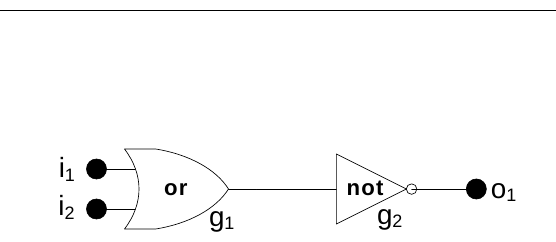
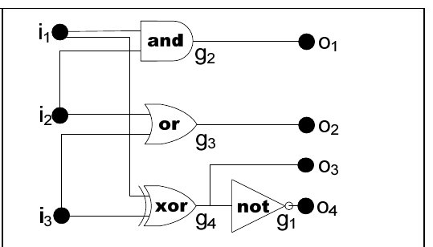

2009 ICPC World Finals · Problem B
A logic circuit maps its input through various gates to its output with no feedback loops in the circuit. The input and output are an ordered set of logical values, represented here by ones and zeros. The circuits we consider are comprised of and gates (which output 1 only when their two inputs are both 1), or gates (which output 1 when one or both of their inputs are 1), exclusive or (xor) gates (which output 1 only when exactly one of the two inputs is 1), and not gates (which output the complement of their single input). The figures below show two circuits.


Unfortunately, real gates sometimes fail. Although the failures may occur in many different ways, this problem limits attention to gates that fail in one of three ways: 1) always inverting the correct output, 2) always yielding 0, and 3) always yielding 1. In the circuits for this problem, at most one gate will fail.
You must write a program that analyzes a circuit and a number of observations of its input and output to see if the circuit is performing correctly or incorrectly. If at least one set of inputs produces the wrong output, your program must also attempt to determine the unique failing gate and the way in which this gate is failing. This may not always be possible.
The input consists of multiple test cases, each representing a circuit with input and output descriptions. Each test case has the following parts in order.
1. A line containing three positive integers giving the number of inputs (N ≤ 8), the number of gates (G ≤ 19), and the number of outputs (U ≤ 19) in the circuit.
2. One line of input for each gate. The first line describes gate g1. If there are several gates, the next line describes gate g2, and so on. Each of these lines contains the gate type (a = and, n = not, o = or, and x = exclusive or), and identification of the input(s) to the gate. Gate input comes from the circuit inputs (i1, i2, …) or the output of another gate (g1, g2, …).
3. A line containing the numbers of the gates connected to the U outputs u1, u2, …. For example, if there are three outputs, and u1 comes from g5, u2 from g1, and u3 from g4, then the line would contain: 5 1 4
4. A line containing an integer which is the number of observations of the circuit’s behavior (B).
5. Finally B lines, each containing N values (ones and zeros) giving the observed input values and U values giving the corresponding observed output values. No two observations have the same input values.
Consecutive entries on any line of the input are separated by a single space. The input is terminated with a line containing three zeros.
For each circuit in the input, print its case number (starting with 1), followed by a colon and a blank, and then the circuit analysis, which will be one of the following (with # replaced by the appropriate gate number):
No faults detected
Gate # is failing; output inverted
Gate # is failing; output stuck at 0
Gate # is failing; output stuck at 1
Unable to totally classify the failure
The circuits pictured in Figure 1 and Figure 2 are used in the first and last sample test cases.
2 2 1 o i1 i2 n g1 2 2 1 0 0 0 0 1 2 1 1 a i1 i2 1 1 1 0 1 2 1 1 a i1 i2 1 2 1 0 1 1 1 1 1 1 1 n i1 1 2 1 1 0 0 3 4 4 n g4 a i1 i2 o i2 i3 x i3 i1 2 3 4 1 4 0 1 0 0 1 0 1 0 1 1 0 1 1 0 1 1 1 0 1 0 1 0 0 0 0 0 0 1 0 0 0
Case 1: No faults detected Case 2: Unable to totally classify the failure Case 3: Gate 1 is failing; output stuck at 1 Case 4: Gate 1 is failing; output inverted Case 5: Gate 2 is failing; output stuck at 0